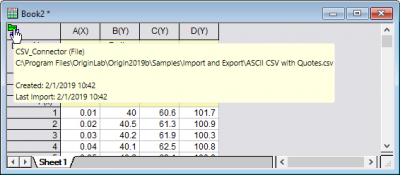
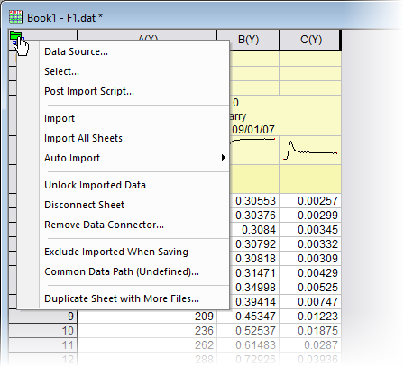
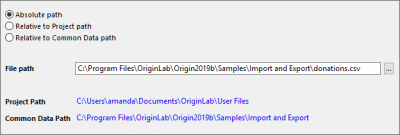
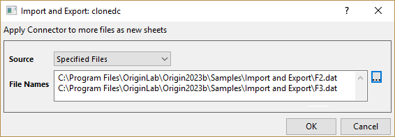
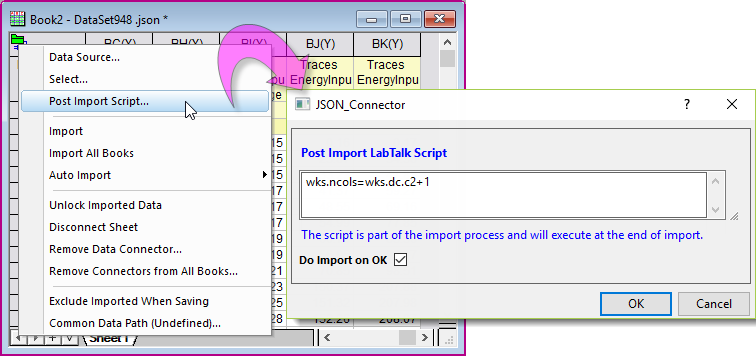
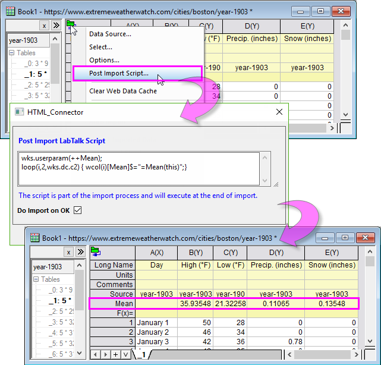
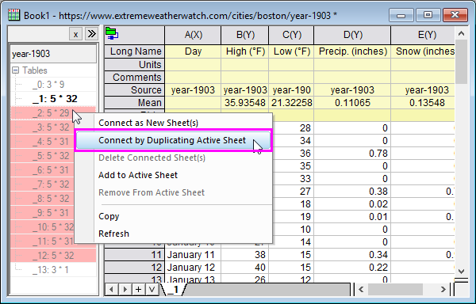
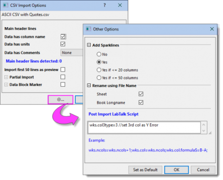
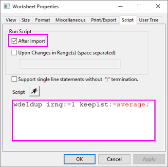

Datenkonnektor
Data-Connector
Verbinden bzw. Datenkonnektor ist ein neues Importframework, das in OriginPro 2019b eingeführt wurde. Dieses neue Framework zeichnet sich gegenüber Origins älteren Dateiimportmethoden durch Geschwindigkeit, Einfachheit und Datenintegrität aus. Unterschiede zwischen Konnektoren und älteren Importmethoden können Sie hier nachlesen:
-
-
Datenintegrität
Datenkonnektoren bieten einen höheren Grad an Datenschutz als ältere Importmethoden:
- Daten sind in Mappen, die Datenkonnektoren enthalten, standardmäßig nicht bearbeitbar. Dies schützt vor versehentlichem Modifizieren und Löschen.
- Daten, die mit dem Text-/CSV- oder Excel-Konnektor importiert wurden, können standardmäßig sortiert werden (Spalte auswählen, dann Arbeitsblatt: Worksheet sortieren), sind ansonsten aber nicht bearbeitbar.
- Daten, die über andere Konnektortypen als Text/CSV und Excel importiert wurden, sind per Standard nicht sortierbar (nicht bearbeitbar, nicht sortierbar).
- Sie können jedoch beide Verhalten, Bearbeiten und Sortieren, von per Konnektor importierten Daten durch Bearbeiten des Werts der LabTalk-Systemvariable @IPDC ändern, BEVOR Sie Daten über den Konnektor importieren.
- Sie können eine Routine für die Nachbearbeitung der verbundenen Daten durch das Einbetten eines Skripts im Arbeitsblatt einrichten. Die Nachbearbeitung kann die Notwendigkeit, Teile des Bearbeitungsschutzes der verbundenen Daten zu entfernen, überflüssig machen und hilft auf diese Weise dabei, die Daten zu sichern.
 |
Beachten Sie, dass der "Schutz" Sie nicht davon abhält, Spalten zum Arbeitsblatt hinzuzufügen, um die importierten Daten zu transformieren (z. B. über Werte setzen). Der Schutz verhindert nur, dass Sie die Originaldaten verändern.
Wenn Sie außerdem NACH dem Importieren entscheiden, dass Sie die importierten Daten frei bearbeiten müssen, können Sie die Datenkonnektoren entfernen, indem Sie auf das Konnektorsymbol klicken und (a) die Verbindung zum Blatt aufheben (Verbindung zum Blatt aufheben), (b) den Datenkonnektor insgesamt entfernen (Datenkonnektor entfernen) -- siehe Konneckormenü: unten, dort wird der Unterschied erklärt -- oder (c) die Daten entsperren (Importierte Daten entsperren -- verfügbar in Origin 2021b und höher).
|
Einen Konnektor zum Blatt hinzufügen
Das Hinzufügen eines Konnektors in ein Arbeitsblatt oder eine Matrix fügt ein Konnektorobjekt in die obere linke Ecke des Blatt ein. Dieses Objekt speichert Informationen, die verwendet werden, um die Verbindung zur Datenquelle aufrecht zu erhalten.
Um einen Konnektor zum aktiven Arbeitsblatt oder zur aktiven Matrix hinzuzufügen, tun Sie Folgendes:
- Klicken Sie auf Daten: Mit Datei verbunden, Mit Web verbinden oder Mit Datenbank verbinden.
- Klicken Sie auf die Registerkarte Konnektoren in der Apps-Galerie und wählen Sie einen Konnektor.
- Ziehen Sie eine konnektorunterstützte Datei per Drag&Drop auf ein Origin-Arbeitsblatt oder eine Origin-Matrix.
Unterschiedlicher Verbindungsstatus werden durch unterschiedliche Symbole angezeigt:
| Symbol |
Verbindungsstatus |
|
das Blatt wird als Ziel eines Datenkonnektors verwendet. |
| - |
das Blatt wird noch nicht von einem Datenkonnektor verwendet. |
|
es gibt Updates in der Datenquelle. |
|
die Datenquelle basiert auf einer Datei und die Datei existiert nicht. |
 |
Wenn Sie die Maus über ein Konnektorsymbol bewegen, zeigt der Tooltipp die grundlegenden Konnektorinformationen an. Klicken Sie mit der rechten Maustaste in den Tooltipp und kopieren Sie die Informationen in die Zwischenablage.
-
- 
|
Dialoge und Menüs
Informationen zu konnektorspezifischen Dialogeinstellungen können Sie unter den folgenden Themen nachlesen:
-
Sobald ein Konnektor hinzugefügt wurde, klicken Sie auf das Konnektorsymbol des Blatts, um die Verbindung zu verwalten.
Konnektormenü
-
- 
-
| Datenquelle |
Öffnen Sie den Dialog, um die Datenquelle auszuwählen bzw. zu ändern.
Für Datenquellen auf einer Festplattendatei wird der Dialog Dateipfad der Datenquelle aufgerufen.
- 
Sie können navigieren und den Pfad der Datenquelle dann speichern als
-
- einen absoluten Pfad,
- einen relativen Pfad zum Speicherordner des Projekts. Das aktuelle Projekt muss vorher gespeichert werden.
- einen relativen Pfad zum allgemeinen Datenpfad, den Sie im Kontextmenü Allgemeiner Datenpfad festgelegt haben.
|
| Auswählen |
Öffnen Sie den Dialog erneut, um die Importeinstellungen anzupassen oder den zu importierenden Zweig auszuwählen. |
| Optionen |
Verfügbar nur für HTML-Tabellenkonnektor (Mit Datei/Web verbinden). Einzelheiten lesen Sie auf dieser Seite. |
| Skripts nach dem Import |
Geben Sie die LabTalk-Skripte ein, die nach dem Import auszuführen sind. Siehe Abschnitt "Skript nach Import ausführen" unten, um mehr zum Ausführen von Skript nach dem Import zu erfahren. |
Import
Alle Mappen importieren |
Importieren Sie die Quelldaten in
- das mit den aktiven Daten verbundene Blatt (Importieren),
- alle mit den Daten verbundenen Blättr in der Projektdatei (Alle Mappe importieren).
|
| Automatisches Importieren |
Der automatische Import kann in einem der folgenden Fälle ausgelöst werden:
- beim Öffnen des Projekts
- wenn sich die Datenquelle geändert wird
|
| Importierte Daten für Datenkonnektor |
Aktivieren Sie diese Option, um das Bearbeiten von importierten Daten zu ermöglichen. Wenn Sie auf das Konnektorsymbol klicken und Import wählen, um die Daten neu zu importieren, wird der Bearbeitungsschutz wiederhergestellt. |
| Aktionen nach Import zurücksetzen |
Wenn Sie nach dem Importieren Aktionen auf die importierten Daten durchgeführt haben, z. B. einige importierte Spalten löschen, müssen Sie dieses Menü auswählen, um die Aktionen zurückzusetzen, bevor Sie die Daten erneut importieren können. |
| Verbindung zum Blatt aufheben |
Die Verbindung zwischen dem Arbeitsblatt/der Matrix und der Datenquelle wird entfernt. Auch der Bearbeitungsschutz wird entfernt. Das Konnektorsymbol bleibt und ermöglicht es Ihnen, dass Sie Ihre Datenquelle wieder verbinden können (damit wird auch der Bearbeitungsschutz wiederhergestellt). |
Datenkonnektor entfernen
Konnektoren aus allen Mappen entfernen |
Entfernen Sie Datenkonnektoren permanent aus
- allen Blättern in der aktiven Mappe (Datenkonnektor entfernen),
- allen Mappen in der Projektdatei (Konnektoren aus allen Mappen entfernen).
Der Bearbeitungsschutz wird aus allen Blättern entfernt. Entfernen Sie außerdem das Häkchen bei Importierte Daten beim Speichern ausschließen.
|
| Importierte Daten beim Speichern ausschließen† |
Aktivieren Sie diese Option, um beim Speichern der Arbeitsmappe oder des Projekts die importierten Daten zu löschen, aber die Verbindung beizubehalten, wodurch die Projektgröße mit vermindert wird und die Daten bei Bedarf einfach erneut importiert werden können. Wenn ein Diagramm aus den importierten Daten gezeichnet wird, gibt es auf dem Diagramm auch eine Download-Schaltfläche, nachdem die importierten Daten gelöscht wurden.
 |
Öffnen Sie zum Beispiel das Beispielprojekt Statistik - Multivariate Analyse - Diskriminanzanalyse (Pro) über Hilfe: Lernzentrum und setzen Sie Beispiele in = Statistik - Multivariate Analyse auf der Registerkarte Analysebeispiel. Versuchen Sie, die Daten über das Menü "Daten: Direkt neu importieren" erneut zu importieren. Aktivieren und Deaktivieren Sie dann das Kontrollkästchen Importierte Daten beim Speichern ausschließen und sehen Sie die Differenz in der Projektgröße.
|
|
| Allgemeiner Datenpfad |
Legen Sie einen allgemeinen Datenpfad fest, der verwendet werden kann, um über das Menü Datenquelle schnell auf die Quelldateien zuzugreifen. Dieser Pfad von allen Mappen im Projekt genutzt und wird mit dem Projekt gespeichert.
Normalerweise gibt man den Hauptordner als den Allgemeinen Datenpfad an. Der Vorteil ist sogar noch weitreichender, wenn Sie den Allgemeinen Datenpfad auf einen gemeinsam genutzten Ordner festlegen, auf den Ihre Gruppenmitglieder Zugriff haben, und dann das Projekt mit ihnen zu teilen.
|
| Pause beim Datei prüfen |
Wenn die Quelldatei auch nach mehrmaligen Prüfen nicht existiert, führt der Datenkonnektor keine weitere Prüfung durch und dieses Menü zeigt Pause beim Datei prüfen an. Sie müssen dieses Menü aktiv deaktivieren, um das stillgelegte Prüfen wieder zu starten. |
| Blatt mit mehreren Dateien duplizieren |
Klonen Sie das aktuelle Arbeitsblatt, z. B. die Importeinstellungen (einschließlich Skripte nach dem Import) und jede Analyseaktion, und importieren Sie die neuen, im Dialog ausgewählten Dateien.

Siehe auch Import klonen im nächsten Abschnitt.
|
Weitere Untermenüs im Menü Daten:
-
| Mit mehreren Dateien verbinden |
Zurzeit unterstützen einige Konnektortypen das gleichzeitige Importieren von mehreren Dateien, zum Beispiel bei CSV- und Excel-Konnektoren für Arbeitsmappe und bei Matlab-, MetroPro- und WDF-Konnektoren für Matrix.
Weitere Einzelheiten finden Sie in diesem Dokument. |
| Import klonen |
Verfügbar für Daten, die über das Menü Daten: Aus Datei importieren importiert wurden. Nachdem Sie eine Datendatei über das Menü Aus Datei importieren importiert haben, verwendet Import klonen die aktive Arbeitsmappe (einschließlich der Importeinstellungen) als Vorlage zum Importieren einer neuen Datei in ein Duplikat der aktuellen Arbeitsmappe. Wenn die aktuelle Arbeitsmappe die Analyse beinhaltet, wird die Neuberechnung in der duplizierten Arbeitsmappe automatisch durchgeführt, unabhängig von dem Modus Neuberechnen des Analysehilfsmittels. Wenn die aktuelle Arbeitsmappe N Blätter importiert, gruppiert Import klonen alle N Datendateien in Reihenfolge der Auswahl und importiert die gleiche Gruppe entsprechend in eine Mappe.
|
Öffnen Sie zum Beispiel das Beispielprojekt Stapelverarbeitung - Klon importieren über Hilfe: Lernzentrum und setzen Sie Beispiele in = Stapelverarbeitung auf der Registerkarte Analysebeispiel. Aktivieren Sie die Arbeitsmappe und wählen Sie im Menü "Daten: Import klonen" und einen anderen Datensatz. Sehen Sie, wie die aktive Arbeitsmappe mit den neuen Daten geklont wird.
|
|
Importierte Daten ausschließen und speichern
Standardmäßig werden Daten beim Verbinden mit Dateien Dateien mit einer Größe von weniger als 500 kB mit dem Projekt gespeichert; Daten aus größeren Dateien werden das nicht.
Modifizieren Sie das Verhalten des Datenausschlusses mit Hilfe dieser LabTalk-Systemvariablen:
-
- @DNS: Steuert, ob Daten ausgeschlossen werden.
- @FSE: Steuert die Größe des Schwellenwerts in Kilobyte, um Daten beim Speichern des Projekts auszuschließen.
- @FSEW: Steuert den Schwellenwert der Anzahl von Origin-Arbeitsblattzellen x 100, um Web-, JSON-, Origin-, MATLAB-Daten beim Speichern auszuschließen.
Um das Standardverhalten zum Ausschließen von Daten für ein gegebenes Fenster manuell zu überschreiben:
Unabhängig von der Importdateigröße oder dem Zustand von @DNS, @FSE bzw. @FSEW können Sie die Daten auf folgende Weisen mit dem Projekt speichern:
- Klicken Sie auf das Konnektorsymbol und deaktivieren Sie das Häkchen neben Importierte Daten beim Speichern ausschließen.
- Klicken Sie mit der rechten Maustaste auf die Titelleiste des Fensters, rufen Sie Eigenschaften auf und deaktivieren Sie das Kontrollkästchen neben Importierte Daten beim Speichern des Projekts ausschließen.
Skript nach Import ausführen
Sie können die Daten beim Import nachbearbeiten, unabhängig von dem aktuellen Wert von @IPDC und ohne die Verbindung zu den Quelldaten zu unterbrechen. Dies kann mit Hilfe zwei verschiedener Methoden erfolgen.
Dialog Skript nach Import
- Klicken Sie nach dem Import auf das Konnektorsymbol und wählen Sie Skript nach dem Import.
- 
- Die Option Import bei OK durchführen ist standardmäßig aktiviert, um die Daten neu zu importieren und die Skripte gleich nach Klicken auf OK auszuführen.
|
Nach dem Import der Tabelle January 1903 Boston Weather von der Webseite Boston Weather in 1903 möchten wir eine benutzerdefinierte Parameterzeile "Mittelwert" hinzufügen, um den Mittelwert von jeder Spalte zu zeigen.
wks.userparam(++Mean); loop(i,2,wks.dc.c2) { wcol(i)[Mean]$="=Mean(this)";}
- 
Wir können dann mehrere Tabellen im Navigationsfeld auswählen (durch Ziehen) und im Kontextmenü Durch Duplizieren des aktiven Blatts verbinden verwenden, um die Tabelle aller 12 Monate mit Hilfe der Einstellungen des aktiven Blatts zu importieren. 
|
- Klicken Sie speziell für den CSV-Konnektor auf die Schaltfläche Weitere Optionen (links von OK). Geben Sie im Dialog Weitere Optionen die LabTalk-Skripte im Bearbeitungsfeld Skript nach Import ein.
- 
LabTalk-Skript mit Hilfe des Dialogs Arbeitsblatteigenschaften einbetten
Sie können LabTalk-Skript auch mit Hilfe des Dialogs Eigenschaften des Arbeitsblatts einbettten (Arbeitsblatt: Worksheet Skript).
- Vor dem Importieren der Daten aktivieren Sie die Arbeitsmappe und wählen Sie Arbeitsblatt: Worksheet Skript.
- Geben Sie Ihr Skript in das Feld Skript ein und aktivieren Sie Kontrollkästchen Nach Import unter Skript ausführen. Verbundene Daten werden für die Bearbeitung nicht gesperrt, bis Ihr Skript ausgeführt wird.
|
Das folgende Beispiel zeigt den Aufruf der X-Funktion wdeldup zum Entfernen der duplizierten Werte in einer Referenzspalte (Spalte 1) durch Mitteln der verbundenen Werte in anderen Spalten.
-
- 
Siehe mehr Beispiele in diesem OriginLab-Blogeintrag.
|
Weiteres, das zu beachten wäre:
- Es gibt Methoden zum Ausführen von Python-Skript von LabTalk aus. Anweisungen finden Sie hier.
- Die Arbeitsmappe und das eingebettete Skript können als eine Vorlagendatei gespeichert werden, um ähnliche Daten zu verarbeiten.
- Einen Überblick über die verbundenen Daten finden Sie in diesem OriginLab-Blogeintrag.
Weitere Bearbeitung
Neben der Unterstützung von Mit mehreren Dateien verbinden können Die meisten Konnektorarten eine Datei/Tabelle gleichzeitig importieren. Wenn Sie mehrere Tabellen auf der gleichen Webseite importieren möchten oder mehrere Dateien im gleichen Pfad, können Sie das Menü Arbeitsblatt hinzufügen verwenden, um sie schnell in die gleiche Arbeitsmappe zu importieren.
Um mehrere Dateien/Tabellen in eine Mappe zu importieren:
- Importieren Sie eine Datei/Tabelle mit dem Datenkonnektor.
- Klicken Sie mit der rechten Maustaste auf die Arbeitsblattregisterkarte und wählen Sie Hinzufügen.
- Ein neues Arbeitsblatt mit Datenkonnektor wird hinzugefügt. Die Datenquelle wird mit der Datenquelle in der Mappe vorgefüllt, es wird aber keine Verbindung hergestellt. Sie können Änderungen vornehmen, um eine neue Tabelle zu importieren.
Beachten Sie, dass jede Arbeitsmappe unterschiedliche Datenquellen haben kann, aber nur einen bestimmten Konnektortyp (wie Text/CSV, JSON oder OPJU). Das heißt, jedes Arbeitsblatt in der Mappe kann seine eigene Datenquelle haben, die von diesem Konnektortyp unterstützt wird.
Um Datentypen zu importieren, die nicht im Standardmenü aufgeführt sind:
- Wählen Sie Daten: Mit Datei/Web verbinden: Neu hinzufügen.
- Das App-Center wird geöffnet, wobei die Kategorie auf Datenkonnektor gesetzt ist. Suchen Sie den Dateityp heraus, zu dem Sie eine Verbindung herstellen möchten, und laden Sie ihn herunter. Sobald er heruntergeladen ist, wird er zum Menü Daten automatisch hinzugefügt, so dass Sie ihn verwenden können. Sie können die App auch auf der Registerkarte Datenkonnektor in der App-Galerie finden.